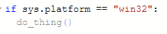

new diagnostic rules
this section lists all of the new diagnostic rules that are exclusive to basedpyright and the motivationbehind them. for a complete list of all diagnostic rules, see here.
reportUnreachable
pyright often incorrectly marks code as unreachable. in most cases, unreachable code is a mistake and therefore should be an error, but pyright does not have an option to report unreachable code as an error, only as agreyed-out hint in your IDE:
if sys.platform == "win32":
do_thing() # no error

this is very easy to miss, especially since it doesn't cause the CLI to fail so such a mistake could easily pass your CI.
by default, pyright will treat the body in the code above as unreachable if pyright itself was run on an operating system other than windows. this is bad of course, because chances are if you write such a check, you intend for your code to be executed on multiple platforms.
to make things worse, unreachable code is not even type-checked at all! so if the code is reached, and the do_thing function isn't being called with the correct arguments, pyright will not complain!
reportUnreachable solves this problem by reporting unreachable code as an error by default.
Note
the above example with sys.platform won't happen by default in basedpyright anyway, because we've changed the default pythonPlatform to "All". but other cases such as python version checks will still benefit from this rule.
reportAny
pyright has a few options to ban "Unknown" types such as reportUnknownVariableType, reportUnknownParameterType, etc. but "Unknown" is not a real type, rather a distinction pyright uses used to represent Anys that come from untyped code or unfollowed imports. if you want to ban all kinds of Any, pyright has no way to do that:
def foo(bar, baz: Any) -> Any:
print(bar) # error: unknown type
print(baz) # no error
basedpyright introduces the reportAny option, which will report an error on usages of anything typed as Any.
reportIgnoreCommentWithoutRule
it's good practice to specify an error code in your pyright: ignore comments:
# pyright: ignore[reportUnreachable]
this way, if the error changes or a new error appears on the same line in the future, you'll get a new error because the comment doesn't account for the other error.
Note
type: ignore comments (enableTypeIgnoreComments) are unsafe and are disabled by default (see #330 and #55). we recommend using pyright: ignore comments instead.
reportPrivateLocalImportUsage
pyright's reportPrivateImportUsage rule only checks for private imports of third party modules inside py.typed packages. but there's no reason your own code shouldn't be subject to the same restrictions. to explicitly re-export something, give it a redundant alias as described in the "Stub Files" section of PEP484 (although it only mentions stub files, other type checkers like mypy have also extended this behavior to source files as well):
# foo.py
from .some_module import a # private import
from .some_module import b as b # explicit re-export
# bar.py
# reportPrivateLocalImportUsage error, because `a` is not explicitly re-exported by the `foo` module:
from foo import a
# no error, because `b` is explicitly re-exported:
from foo import b
reportImplicitRelativeImport
pyright allows invalid imports such as this:
# ./module_name/foo.py:
# ./module_name/bar.py:
import foo # wrong! should be `import module_name.foo` or `from module_name import foo`
this may look correct at first glance, and will work when running bar.py directly as a script, but when it's imported as a module, it will crash:
# ./main.py:
import module_name.bar # ModuleNotFoundError: No module named 'foo'
the new reportImplicitRelativeImport rule bans imports like this. if you want to do a relative import, the correct way to do it is by importing it from . (the current package):
# ./module_name/bar.py:
from . import foo
reportInvalidCast
most of the time when casting, you want to either cast to a narrower or wider type:
foo: int | None
cast(int, foo) # narrower type
cast(object, foo) # wider type
but pyright doesn't prevent casts to a type that doesn't overlap with the original:
foo: int
cast(str, foo)
in this example, it's impossible to be foo to be a str if it's also an int, because the int and str types do not overlap. the reportInvalidCast rule will report invalid casts like these.
note about casting with TypedDicts
a common use case of cast is to convert a regular dict into a TypedDict:
foo: dict[str, int | str]
bar = cast(dict[{"foo": int, "bar": str}], foo)
unfortunately, this will cause a reportInvalidCast error when this rule is enabled, because although at runtime TypedDict is a dict, type checkers treat it as an unrelated subtype of Mapping that doesn't have a clear method, which would break its type-safety if it were to be called on a TypedDict.
this means that although casting between them is a common use case, TypedDicts and dicts technically do not overlap.
reportUnsafeMultipleInheritance
multiple inheritance in python is awful:
class Foo:
def __init__(self):
super().__init__()
class Bar:
def __init__(self):
...
class Baz(Foo, Bar):
...
Baz()
in this example, Baz() calls Foo.__init__, and the super().__init__() in Foo now calls to Bar.__init__ even though Foo does not extend Bar.
this is complete nonsense and very unsafe, because there's no way to statically know what the super class will be.
pyright has the reportMissingSuperCall rule which, for this reason, complains even when your class doesn't have a base class. but that sucks because there's no way to know what arguments the unknown __init__ takes, which means even if you do add a call to super().__init__() you have no clue what arguments it may take. so this rule is super annoying when it's enabled, and has very little benefit because it barely makes a difference in terms of safety.
reportUnsafeMultipleInheritance bans multiple inheritance when there are multiple base classes with an __init__ or __new__ method, as there's no way to guarantee that all of them will get called with the correct arguments (or at all). this allows reportMissingSuperCall to be more lenient. ie. when reportUnsafeMultipleInheritance is enabled, missing super() calls will only be reported on classes that actually have a base class.
reportUnusedParameter
pyright will report an unused diagnostic on unused function parameters:
def print_value(value: str): # "value" is not accessed
print("something else")
but like with unreachable code, this just greys out code instead of actually reporting it as an error. basedpyright introduces a new reportUnusedParameter diagnostic rule which supports all the severity options ("error", "warning" and "none") as well as "unused", which is the default behavior in pyright.
reportImplicitAbstractClass
abstract classes in python are declared using a base class called ABC, and were designed to be validated at runtime rather than by a static type checker. this means that there's no decent way to ensure on a class's definition that it implements all of the required abstract methods:
from abc import ABC, abstractmethod
class AbstractFoo(ABC):
@abstractmethod
def foo(self):
...
# no error here even though you haven't implemented `foo` because pyright assumes you want this class to also be abstract
class FooImpl(AbstractFoo):
def bar(self):
print("hi")
foo = FooImpl() # error
this isn't ideal, because you may not necessarily be instantiating the class (eg. if you're developing a library and expect the user to import and instantiate it), meaning this error will go undetected.
the reportImplicitAbstractClass rule bans classes like this that are implicitly abstract just because their base class is also abstract. it enforces that the class also explicitly extends ABC as well, to indicate that this is intentional:
# even though Foo also extends ABC and this is technically redundant, it's still required to tell basedpyright that you
# are intentionally keeping this class abstract
class FooImpl(AbstractFoo, ABC):
def bar(self):
print("hi")
reportUnannotatedClassAttribute
pyright does not warn when a member of a class that doesn't have a type annotation is overridden with an incompatible type:
class A:
value = 1
class B(A):
value = None # no error, even though the type on the base class is `int` and the type here is `None`
this decision seems to have been made for performance reasons, which is fair enough. but because it's unsafe, there should be a check that enforces type annotations on class attributes (unless the class is decorated with @final). the reportUnannotatedClassAttribute rule will do just that.